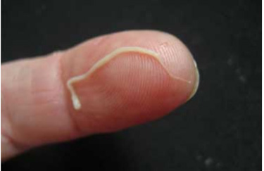
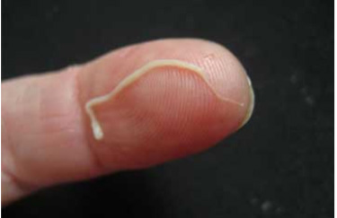

BRODAWKI POWSTAJĄ W WYNIKU OBECNOŚCI PASOŻYTÓW W TWOIM ORGANIZMIE!
JEŚLI MASZ BRODAWKI NA SZYI, POD PACHAMI I W INNYCH MIEJSCACH – PASOŻYTY POŻERAJĄ CIĘ OD ŚRODKA!
Jeżeli ktoś ma brodawki na skórze, oznacza to, że kolonia śmiercionośnych pasożytów zagnieździła się w jego organach wewnętrznych i powoli pożera tkanki.
Według statystyk ponad miliard osób cierpi na zakażenie pasożytnicze. Najtrafniejsze diagnozy stawiane są w oparciu o wysyp brodawek.
Na wasze pytania odpowiada:
Michał Sutkowski
Prezes Warszawskich Lekarzy Rodzinnych oraz
Rzecznik Prasowy Kolegium Lekarzy Rodzinnych w Polsce. Jest autorem
publikacji prasowych popularyzujących zagadnienia z pogranicza
medycyny i sportu. Współpracował z wieloma renomowanymi krajowymi
placówkami medycznymi.
Słowo od Redakcji: W Naukowym Instytucie
Badań Medyczno-Parazytologicznych i
Medycyny Tropikalnej odkryto prawdziwą przyczynę tworzenia się
brodawek na skórze
człowieka: zakażenie pasożytnicze. Niedawno przeprowadzone badania
wykazały, że
produkty metaboliczne pasożytów są toksyczne i tworzą w żołądku
środowisko idealne
dla rozwoju bakterii. Właśnie z tego powodu osoby zarażone
pasożytami mogą
obserwować, że na ich skórze pojawiają się brodawki.
Omówimy ten problem natury medycznej z Michał
Sutkowski
Dzień dobry, Pan Sutkowski. Zacznę od
najważniejszego pytania: Czy to prawda, że
większość populacji w Polsce jest zarażona pasożytami?
Pan Sutkowski Tak. Zajmujemy jedną z
czołowych pozycji, jeśli chodzi o zarażenia
pasożytami. Przyczyną są ekstremalnie kiepskie warunki ekologiczne,
brak działań ze
strony władz oraz obojętność ludzi.
Co roku miliony ludzi umierają na choroby
wywołane przez pasożyty. A jednocześnie,
jeśli spojrzymy na ich akty zgonu, to nie ma tam wzmianki o śmierci
z powodu
zarażenia pasożytami. Wyjątków jest bardzo niewiele, a generalnie
chodzi tu o
sytuacje, gdy nie da się zignorować zakażenia, np. kiedy dochodzi do
zablokowania
serca przez robaki. Lokalnym przedstawicielom administracji
medycznej nie opłaca się
przyznać, że mamy do czynienia z bardzo wysokim poziomem zarażenia
społeczeństwa i wolą ignorować fakt, że przyczyną około 89% zgonów
są właśnie
pasożyty. Ponadto choroby wywoływane przez pasożyty zmuszają ludzi,
by zgłaszali
się do klinik po kosztowne leki. To olbrzymi rynek. Mam nadzieję, że
zdołacie wyczytać
moje intencje pomiędzy wierszami.
Korespondent: Pan Sutkowski, czy brodawki
to rzeczywiście oznaka zarażenia
pasożytami?
Pan Sutkowski Tak. Klika grup
badawczych potwierdza tezę, że produkty wydalane przez
pasożyty przyczyniają się do powstawania brodawek na ludzkiej
skórze. Dodatkowo,
jeżeli zobaczymy na naszej skórze brodawki, oznacza to, że pasożyty
już się w nim
zagnieździły i aktywnie składają jaja. Dlatego też każda osoba,
która ma brodawki na
swoim ciele, znajduje się w śmiertelnym niebezpieczeństwie.
A przypominam, że około 89% wszystkich
zgonów, w tym z tak zwanych „przyczyn
naturalnych“, wywołuje tylko jeden czynnik – pasożyty, powoli
zjadające daną osobę
od środka.
Korespondent: A więc pasożyty to
przeważnie robaki, które mogą wywoływać
brodawki, pojawiające się na skórze? Jak to możliwe, że mogą być
przyczyną
śmierci?
Pan Sutkowski Tak naprawdę dużym
błędem jest sądzić, że pasożyty to jedynie robaki.
Istnieje ogromna liczba przeróżnych gatunków pasożytów, które mogą
zamieszkiwać
różne organy i wywoływać bardzo zróżnicowane konsekwencje. Ponadto
robaki lub też
helminty są całkiem groźne. Dosłownie niszczą jelita, które gniją i
w rezultacie
człowiek umiera. A nawiasem mówiąc, helminty są trudne do wykrycia i
wyplenienia.
Oprócz nich istnieją tysiące pasożytów, które
mogą żyć w wątrobie, mózgu, płucach,
we krwi i w żołądku. I niemal wszystkie są śmiercionośne. Niektóre z
nich natychmiast
zaczynają agresywnie niszczyć ciało ludzkie. Inne pasożyty żyją
niezauważenie do
momentu, gdy ich liczba jest już tak ogromna, że ciało nie jest w
stanie sobie z nimi
radzić i człowiek umiera. Wywołują one szereg śmiertelnych
komplikacji: atak serca,
rak, marskość wątroby, zapalenie nerek, gnicie nerek itp.
Jednocześnie mogę z całą pewnością
powiedzieć, że praktycznie każdy jest zarażony
pasożytami. Problem polega na tym, że niektóre z nich bardzo ciężko
zlokalizować. A
gdy efekty zarażenia pasożytami stają się widoczne, lekarze próbują
się ich pozbyć.
Nawet w trakcie autopsji, obecność pasożytów trzeba potwierdzić
specjalnymi testami.
Przynajmniej w większości przypadków.
Jednym uniwersalnym objawem, który pozwala
trafnie postawić diagnozę o obecności
pasożytów w organizmie ludzkim, są brodawki.
Korespondent: Czy może Pan podać kilka
konkretnych przykładów zarażenia
pasożytami?
Pan Sutkowski Mogłabym opowiedzieć o
tysiącach przypadków. Ale może skupię się na
tych, które najlepiej obrazują zagrożenia, jakie niesie ze sobą
zarażenie pasożytami.
1. Przypadek z dobrym zakończeniem. Pacjent
narzekał na sporadyczne bóle
brzucha. Badania pokazały, że całe jego jelita były po brzegi
wypełnione robakami.
Dosłownie przekopały tam sobie labirynt, zaczął się proces
degeneracji tkanek, a
pacjent stanął na krawędzi sepsy. Podczas operacji konieczne było
usunięcie odcinka
jelita, a robaki usunięto wraz z rozkładającymi się tkankami. Po
tygodniu intensywnej
terapii, pacjent poczuł się lepiej.
2. Macica zarażona kolonią pasożytów.
Niestety usunięcie ich nie było już możliwe,
ponieważ pasożyty i ich larwy całkowicie wypełniły macicę tej
pacjentki i kilkukrotnie
powiększyły jej rozmiar. Dlatego konieczne było jej usunięcie.
Kobietę udało się
uratować. Zatrucie organizmu było jednak tak dalece posunięte, że
musiała poddać się
specjalistycznemu leczeniu po usunięciu macicy i niestety zmarła 3
lata później.
3. Bąblowica serca. Chorobę wykryto zbyt
późno. Lekarz prowadzący uważał, że ten
pacjent cierpiał po prostu na chorobę wieńcową serca i dławicę
piersiową, ale prawda
była o wiele okrutniejsza. Operacja nie pomogła, leczenie
zachowawcze także. Nie
podziałał także przeszczep serca – bo nie znalazł się dawca. W
efekcie pacjent zmarł,
nie odzyskawszy przytomności.
Korespondent: Jak możemy sprawdzić, czy
jesteśmy zarażeni pasożytami?
Pan Sutkowski Niestety nie istnieją
metody, które pozwalają z całą pewnością
zdiagnozować, czy w organizmie ludzkim znajdują się pasożyty, czy
też nie.
Częściowo ze względu na to, że istnieje tak wiele typów pasożytów
(ponad 2000
znanych gatunków), a częściowo z uwagi na fakt, że są tak trudne do
wykrycia. Pełne
badanie na obecność pasożytów można przeprowadzić w zaledwie kilku
miejscach w
Polsce i jest to bardzo kosztowne.
Pierwsze objawy, które wskazują na
obecność pasożytów w organizmie to:
- - brodawki,
- - nieświeży oddech,
- - alergie (wysypki, łzawiące oczy i katar),
- - wysypka i zaczerwienienie skóry,
- - częste przeziębienia, ból gardła, zatkany nos,
- - chroniczne zmęczenie (szybko się męczysz bez względu na to, co robisz),
- - częste bóle głowy,
- - zaparcia lub biegunki,
- - bóle mięśni i stawów,
- - nerwowość, bezsenność i zaburzenia apetytu,
- - ciemne kręgi i worki pod oczami.
Jeżeli zauważycie u siebie przynajmniej jeden
z tych objawów, to szansa na to, że na
waszym organizmie żerują pasożyty wynosi 99%. I należy się ich
pozbyć tak szybko,
jak to możliwe!
Korespondent: Jak możemy się chronić i
pozbyć pasożytów?
Jeśli chodzi o dostępność leków zwalczających
zarażenie pasożytami, to obecna
sytuacja jest dość problematyczna. Oczywiście istnieją wysoce
wyspecjalizowane leki,
które oczyszczają organizm z robaków. Są także bardziej lub mniej
skuteczne leki
zwalczające pewne rodzaje robaków lub pasożytów atakujących wątrobę.
Główny
problem polega jednak na tym, że oddziałują one jedynie na jeden
konkretny typ
pasożyta. Natomiast każda osoba jest nosicielem co najmniej 7-8
gatunków
pasożytów. Patrząc na uśrednione dane, widzimy, że każda zarażona
osoba jest
nosicielem 11-14 typów pasożytów.
Na dzień dzisiejszy istnieje tylko jedno
rozwiązanie, które pozwala pozbyć się
pasożytów. Jest to suplement przeciwpasożytniczy o nazwie . Badania
kliniczne przyniosły wspaniałe rezultaty. Eksport tego środka jest
wstrzymany do
momentu aż zostanie on rozdystrybuowany w całej Polsce.
Korespondent: Co sprawia, że
jest taki wyjątkowy? Jaka jest różnica
pomiędzy tym preparatem a innymi produktami
przeciwpasożytniczymi?
Pan Sutkowski Jak już wspomniałam, na
dzień dzisiejszy, jest to jedyny skuteczny środek
przeciwpasożytniczy na całym świecie. Pomaga całkowicie pozbyć się
pasożytów.
Dlatego jest tak pożądany przez międzynarodowe sieci aptek i firmy
farmaceutyczne.
W porównaniu do innych leków przeciwpasożytniczych, działa
bezpośrednio na
szeroką gamę pasożytów, które mogą zainfekować całe ciało. Biorąc
pod uwagę
trudności diagnostyczne, warto zauważyć, że ten środek pozwala
skutecznie oczyścić
cały organizm. Wspomniałam już wcześniej, że wykrycie, jaki rodzaj
pasożytów
zainfekował organizm, jest prawie niemożliwe. A
niszczy i usuwa wszelkie
pasożyty, żyjące w dowolnym organie wewnętrznym – od mózgu,
poprzez serce i
wątrobę, po jelita. Żaden inny dostępny dziś lek nie jest w
stanie tego uczynić.
Poza tym, nie jest to środek o chemicznym
składzie, ale produkt całkowicie naturalny,
co eliminuje ryzyko wystąpienia reakcji alergicznych, zaburzeń flory
bakteryjnej w
jelitach oraz innych problemów, które mogą pojawić się, podczas
stosowania
klasycznych tabletek oraz zmuszania organizmu do przetwarzania wielu
syntetycznych
substancji.
WAŻNE! Producent uruchomił
właśnie specjalną promocję, w ramach
której środek ten można nabyć 50% taniej!
To oferta limitowana czasowo. Oryginalny produkt można zamówić na OFICJALNEJ STRONIE INTERNETOWEJ W PROMOCYJNEJ CENIE -50%
To oferta limitowana czasowo. Oryginalny produkt można zamówić na OFICJALNEJ STRONIE INTERNETOWEJ W PROMOCYJNEJ CENIE -50%

1. Skuteczność
obliczono przy użyciu standardowych
technik
(stosunek przypadków wyleczenia do całkowitej liczby pacjentów w
grupie 100
osób leczonych tym środkiem):
2. Nie odnotowano negatywnych efektów
ubocznych, w tym reakcji
alergicznych.
Środek ten uzyskał certyfikację nie tylko w
Polsce, ale także w całej Europie na
Uniwersytecie Parazytologii w Paryżu. Badania kliniczne w pełni
potwierdziły dane
uzyskane w Polsce. Francuzi uzyskali nawet wyższy odsetek
wyleczonych pacjentów.
Obecnie cykle badań klinicznych dobiegają
także końca w Chinach, Japonii i
Wietnamie. Kraje azjatyckie wykazują ogromne zainteresowanie tym
środkiem.
Wszelkie testy bez wyjątku wykazały niebywałą skuteczność tego
produktu.
Pan Sutkowski To oferta limitowana
czasowo. A sam produkt dostępny jest jedynie w
wybranych regionach kraju. Jak już wspomniano wyżej obecnie można
nabyć po promocyjnej cenie -50%.
Jedyne, co trzeba zrobić, by zakupić , to przesłać żądanie poprzez
stronę
internetową i podać swoje nazwisko oraz numer telefonu, pod którym
operator będzie
mógł skontaktować się z zainteresowaną osobą. Jeżeli zobaczycie, że
wciąż dostępna
jest opcja przesłania żądania kontaktu, oznacza to, że środek ten
nie zniknął jeszcze
całkiem z magazynów. Osobiście gwarantuję, że wszystkie osoby, które
prześlą
żądania poprzez stronę internetową, otrzymają swoje zamówienia.
Korespondent: - Pan Sutkowski, czy
chciałaby Pan jeszcze coś przekazać naszym
czytelnikom, zanim zakończymy wywiad?
Pan Sutkowski Jedyne co chciałbym
powiedzieć, to dbajcie o zdrowie. Możecie tego
nawet nie podejrzewać, ale prawdopodobieństwo, że pasożyty żyją w
was wynosi 97-
98%. Mogą być wszędzie – we krwi, jelitach, płucach, sercu, mózgu.
Pasożyty
dosłownie pożerają was od wewnątrz, jednocześnie zatruwając wasze
ciała. W efekcie
pojawia się mnóstwo problemów, które mogą skrócić życie o 15-25 lat.
Nie wspomnę
nawet o problemie nagłego zgonu, który zwykle pojawia się w wyniku
działań
pasożytów w organizmie. Nie czekajcie aż będzie za późno. Już teraz
oczyśćcie swój
organizm.
Ważne! Wykazano, że i to najlepszy moment
na rozpoczęcie leczenia. Efekt
działania tego środka zwiększa się. Poprawa stanu zdrowia
następuje 47%
szybciej niż w innym czasie w ciągu roku.

Wypróbowałam ten produkt. Miałam mnóstwo brodawek na szyi i pod pachami. Po
pięciu dniach widziałam, że jest ich coraz mniej. Mój żołądek
także lepiej
funkcjonuje..
Ja też zamówiłam dla siebie . Przyszedł kurierem następnego dnia.
Miałam pełno brodawek na szyi. Zaczęłam to łykać i... nie macie
pojęcia, co zaczęło ze mnie wyłazić. W życiu nie przypuszczałam,
że w moich jelitach może
siedzieć taka ilość żyjątek... Wolę już o tym nie myśleć... to
prawdziwy koszmar.

Wyobraźcie to sobie, że znalazłam robaki w nocniku dziecka. To było obleśne!!!
Byłam przerażona. Moja znajoma też miała taki problem niedawno i
poleciła mi
. Natychmiast zamówiłam na
oficjalnej stronie. Z mojego dziecka wylazło
mnóstwo martwych robali! Po zakończeniu kuracji poszliśmy do
lekarza, a on
potwierdziło, że to były robaki jelitowe.
potrafi zdziałać cuda. O tyle
dobrze, że mój syn nawet nie wiedział, że ma problem. To
zobaczyłam na początku
w nocniku syna (i omal nie wylałam jego zawartości na podłogę z
przerażenia!) :(.


Bardzo dziękuję! Gdy zaczynałem brać , nie wyobrażałam sobie, że
mogę
osiągnąć taki efekt. Ból brzucha już zniknął (chyba coś tam we
mnie żyło), a wraz z
nim bezdech i brodawki. Teraz, mając 53 lata, czuję się lepiej
niż jakikolwiek 30-
latek. Dziękuję, że o mówicie ludziom o tym problemie. Od
lekarza rodzinnego na
pewno nie usłyszą takich ważnych informacji.

Andrzeju, dziękuję za pozytywną opinię.
Pozdrawiam, Michał Sutkowski


Ostatnio oglądałam dokument na Polsacie o pasożytach. Wspomnieli o tym
produkcie. Mówili, że to najlepszy suplement przeciwpasożytniczy
na świecie.

Właśnie złożyłam zamówienie. Paczka powinna przyjść w ciągu tygodnia. Nie
mogę się doczekać!

Miewałam koszmarne migreny i brodawki. Przez kilka tygodniu brałam
i
moje problemy zniknęły. Teraz nie mogę przestać myśleć o
tym... Co tam żyło?

Babcia nauczyła mnie, jak pozbyć się pasożytów dzięki piołunowi. Moja cała
rodzina pije napar i, wiecie co, to działa! Glisty
dosłownie wyłażą z dzieci. Ale... nie
pomaga na brodawki. Zamówiłam
I już nie mam problemów z
brodawkami! I daliśmy sobie na spokój z gorzkim naparem
babci i przerzuciliśmy
się na . Działa tak
samo, cena jest bardzo przystępna, a i stosuje się
znacznie łatwiej. A teraz jeszcze jest promocja.

Bardzo interesujący wywiad, dzięki! Otwieracie ludziom oczy!

A co jeśli to ściema? Czemu sprzedają to tylko przez internet?


Ula, czytałaś w ogóle ten artykuł? O jakim oszustwie mówisz, skoro płatność jest
przy odbiorze? Zamówiłem i suplement
przyniósł kurier. Wszystko sprawdziłem, a
potem zapłaciłem. Teraz wszystko sprzedają w
internecie, od ciuchów i butów po
różne sprzęty i meble.
Komentarze